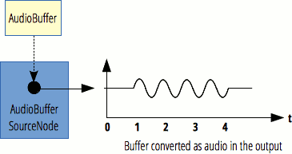

This article needs a technical review. How you can help.
The AudioBufferSourceNode interface represents an audio source consisting of in-memory audio data, stored in an AudioBuffer. It is an AudioNode that acts as an audio source.
AudioBufferSourceNode has no input and exactly one output. The number of channels in the output corresponds to the number of channels of the AudioBuffer that is set to the AudioBufferSourceNode.buffer property. If there is no buffer set—that is, if the attribute's value is NULL—the output contains one channel consisting of silence. An AudioBufferSourceNode can only be played once; that is, only one call to AudioBufferSourceNode.start() is allowed. If the sound needs to be played again, another AudioBufferSourceNode has to be created. Those nodes are cheap to create, and AudioBuffers can be reused across plays. It is often said that AudioBufferSourceNodes have to be used in a "fire and forget" fashion: once it has been started, all references to the node can be dropped, and it will be garbage-collected automatically.
Multiple calls to AudioBufferSourceNode.stop() are allowed. The most recent call replaces the previous one, granted the AudioBufferSourceNode has not already reached the end of the buffer.

| Number of inputs | 0 |
|---|---|
| Number of outputs | 1 |
| Channel count | defined by the associated AudioBuffer |
Constructor
AudioBufferSourceNode()- Creates and returns a new
AudioBufferSourceNodeobject.
Properties
Inherits properties from its parent, AudioNode.
AudioBufferSourceNode.buffer- Is an
AudioBufferthat defines the audio asset to be played, or when set to the valuenull, defines a single channel of silence. AudioBufferSourceNode.detune- Is a k-rate
AudioParamrepresenting detuning of oscillation in cents. Its default value is0. AudioBufferSourceNode.loop- Is a Boolean attribute indicating if the audio asset must be replayed when the end of the
AudioBufferis reached. Its default value isfalse. AudioBufferSourceNode.loopStart- Is a double value indicating, in seconds, where in the
AudioBufferthe restart of the play must happen. Its default value is0. AudioBufferSourceNode.loopEnd- Is a double value indicating, in seconds, where in the
AudioBufferthe replay of the play must stop (and eventually loop again). Its default value is0. AudioBufferSourceNode.playbackRate- Is an a-rate
AudioParamthat defines the speed factor at which the audio asset will be played. Since no pitch correction is applied on the output, this can be used to change the pitch of the sample.
Event handlers
AudioBufferSourceNode.onended- Is an
EventHandlercontaining the callback associated with theendedevent.
Methods
Inherits methods from its parent, AudioNode.
AudioBufferSourceNode.start()- Schedules the start of the playback of the audio asset.
AudioBufferSourceNode.stop()- Schedules the end of the playback of an audio asset.
Examples
In this example, we create a two-second buffer, fill it with white noise, and then play it via an AudioBufferSourceNode. The comments should clearly explain what is going on.
Note: You can also run the code live, or view the source.
var audioCtx = new (window.AudioContext || window.webkitAudioContext)();
var button = document.querySelector('button');
var pre = document.querySelector('pre');
var myScript = document.querySelector('script');
pre.innerHTML = myScript.innerHTML;
// Stereo
var channels = 2;
// Create an empty two-second stereo buffer at the
// sample rate of the AudioContext
var frameCount = audioCtx.sampleRate * 2.0;
var myArrayBuffer = audioCtx.createBuffer(2, frameCount, audioCtx.sampleRate);
button.onclick = function() {
// Fill the buffer with white noise;
//just random values between -1.0 and 1.0
for (var channel = 0; channel < channels; channel++) {
// This gives us the actual ArrayBuffer that contains the data
var nowBuffering = myArrayBuffer.getChannelData(channel);
for (var i = 0; i < frameCount; i++) {
// Math.random() is in [0; 1.0]
// audio needs to be in [-1.0; 1.0]
nowBuffering[i] = Math.random() * 2 - 1;
}
}
// Get an AudioBufferSourceNode.
// This is the AudioNode to use when we want to play an AudioBuffer
var source = audioCtx.createBufferSource();
// set the buffer in the AudioBufferSourceNode
source.buffer = myArrayBuffer;
// connect the AudioBufferSourceNode to the
// destination so we can hear the sound
source.connect(audioCtx.destination);
// start the source playing
source.start();
}
Note: For a decodeAudioData example, see the AudioContext.decodeAudioData page.
Specifications
| Specification | Status | Comment |
|---|---|---|
| Web Audio API The definition of 'AudioBufferSourceNode' in that specification. |
Working Draft |
Browser compatibility
| Feature | Chrome | Edge | Firefox (Gecko) | Internet Explorer | Opera | Safari (WebKit) |
|---|---|---|---|---|---|---|
| Basic support | 14 webkit[1] | (Yes) | 23.0 (23.0) | No support | 15 webkit 22 |
6 webkit |
detune property |
(Yes) | (Yes) | 40.0 (40.0) | No support | ? | ? |
| Feature | Android | Chrome | Edge | Firefox Mobile (Gecko) | Firefox OS | IE Phone | Opera Mobile | Safari Mobile |
|---|---|---|---|---|---|---|---|---|
| Basic support | No support | 28 webkit[1] | (Yes) | 25.0 (25.0) | 1.2 | No support | No support | 6 webkit |
detune property |
No support | (Yes) | (Yes) | (Yes) | (Yes) | No support | No support | ? |
[1] As of Chrome 42.0 setting AudioBufferSourceNode.buffer more than once is deprecated. A deprecation message is displayed if the buffer attribute is assigned more than once.